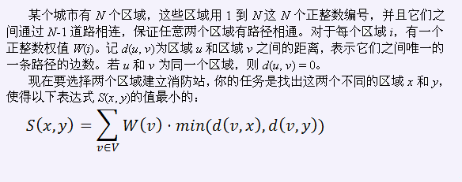

Notice:注册本OJ方式请见https://www.lydsy.com/JudgeOnline/wttl/thread.php?tid=5671
Problem 2103. -- Fire 消防站2103: Fire 消防站
Time Limit: 30 Sec Memory Limit: 259 MB
Submit: 164 Solved: 122
[Submit][Status][Discuss]Description

Input
共N+1行。
第一行有一个正整数N，表示区域的个数。
接下来有N-1行，每行两个整数u、v，表述区域u和区域v之间有一条道路。
最后一行有N个正整数，第i个正整数表示区域i的权值W(i)。
Output
包含一个正整数，为最小的S(x, y)的值。
Sample Input
5
1 2
1 3
3 4
3 5
5 7 6 5 4
Sample Output
14
【样例解释】
选取区域2和区域3。
【数据规模和约定】
用H表示距离区域1最远结点的距离，即d(1, u)的最大值。
对于30%的数据满足：2 ≤ N ≤ 5000、H ≤ 30
对于70%的数据满足：2 ≤ N ≤ 50000、H ≤ 30
对于100%的数据满足：2 ≤ N ≤ 50000、H ≤ 70、W(i) ≤ 100
HINT
Source
[Submit][Status][Discuss]
HOME
Back